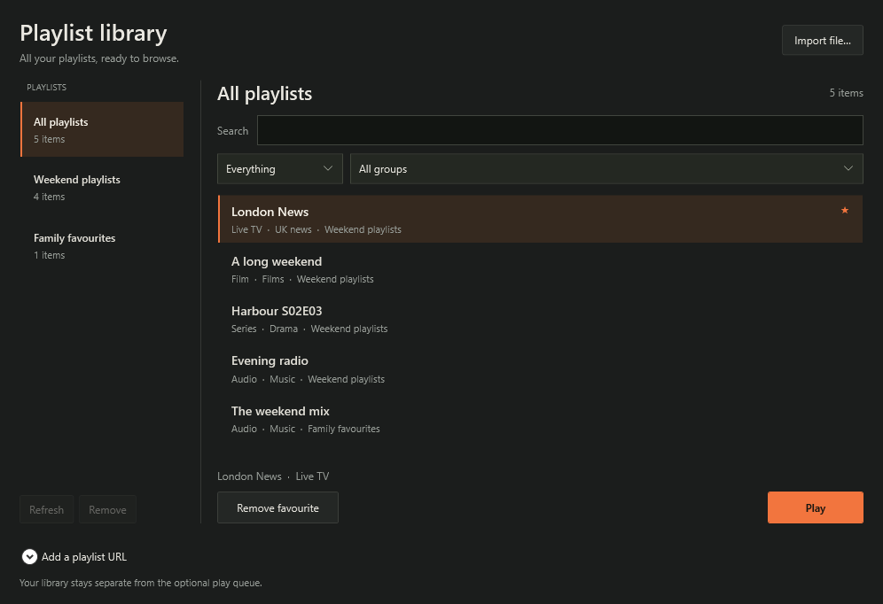
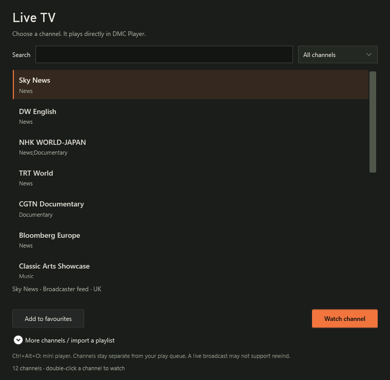

Load the UK community list
Roughly 300 entries from IPTV-org’s community-maintained public-stream list.
Live TV
Direct channel streams play through DMC Player’s own playback engine, with the same mini window, volume and click-through controls as your files.
Your playlist library
Open an M3U file or choose File → Playlist library to import a file or playlist URL. Browse everything listed in it, with saved sources, groups, search, media types and favourites.
A one-video playlist starts its video. Larger lists open the library so you can choose what to watch. Refresh a list when it changes, or remove it without deleting any media files. Your optional play queue stays separate.
Available from DMC Player 2.10. A single-video playlist only lists that video; import a complete channel or film list for a wider catalogue. Media links still need to be accessible through your provider.

The starter list includes Sky News, DW English, NHK WORLD-JAPAN, CGTN Documentary, Bloomberg Europe, Classic Arts Showcase, TRT World, TRT Arabi and FashionTV.
Search by name, choose a category and keep your favourites together. Channel lists stay separate from your play queue.
Get the free player
More channels
Open More channels / import a playlist in Live TV to choose a community list or bring your own.
Roughly 300 entries from IPTV-org’s community-maintained public-stream list.
Roughly 3,000 entries spanning news, entertainment, films, music and more.
Use your own channel list, including a supported lineup from your network TV tuner or Tvheadend server.
Getting started
Choose File → Live TV in the full player.
Search the starter list or expand the import section to load more channels.
Double-clicking works too. Press Ctrl + Alt + O when you want the mini window.
Before you watch
Community lists contain submitted public links. Entries can stop working, restrict your location or require another player. A list entry is not a guarantee of permission, availability or picture quality.
Freeview’s aerial channels need tuner hardware; they are not all unrestricted internet streams. BBC iPlayer, ITVX and other signed-in services may still need their own web players under File → Streaming services.
Accounts, subscriptions, TV Licence and DRM requirements still apply. Live streams may not support rewind. DMC Player does not supply TV subscriptions or bypass provider restrictions.
Channel sources & viewing notes